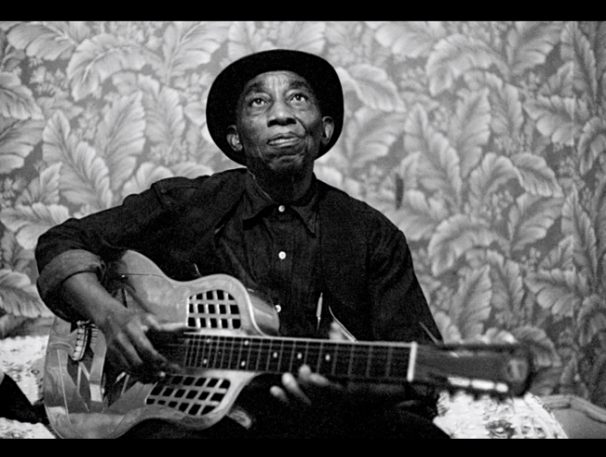

MISSISSIPPI JOHN HURT

Mississippi John Hurt with guitar in hand
Early country blues legend whose warm, amiable sound and longevity also made him a major figure during the '60s blues revival.
Timeline of his life
- 1892: Born in Teoc, Carrol County Mississippi
- 1901: Began to teach himself guitar
- 1920s: Worked as a farmhand and sharecropper
- 1923: Began playing with Willie Narmour, a fiddle player
- 1928: Auditioned for producer Tommy Rockwell. His records were commercial failures and rockwell went out of business during the great depression. He returned to work as a sharecropper and continued to play at parties
- 1952: His renditions of "Frankie" and "Spike Driver Blues" were included in The Anthology of American Folk Music
- 1963: His song "Avalon Blues" was discovered, which led to musicologist Dick Spottswood locating Hurt to persuade him to play some songs for him and to convince him to move to Washington D.C.
- 1963 to 1965: Began to play extensively at colleges, concert halls, and coffe houses. He beecame a star of the folk revival happening at the time. He also recorded three albums for Vanguard Records and had most of his repertoire recorded by the Library of Congress.
- 1966: He died of a heart attack on November 2nd in Grenada, Mississippi.
To learn more about this amazing musician, please visit his biography on Allmusic.com